From waves only: Those facing out do a Scoot Back, while those facing in Extend, Swing, Slip, Swing, and Extend. Ends in waves.
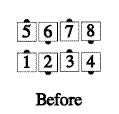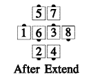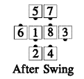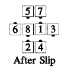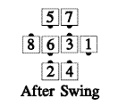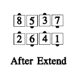
From quarter tag: All Extend, Swing, Slip, Swing, and Extend. Ends in three quarter tag.
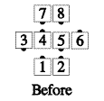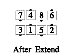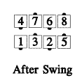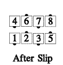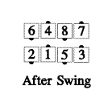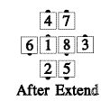
For teaching: The centers' part can be thought of as a Swing Thru 1½—Extend or Left Swing Thru 1½—Extend, depending on what hand was held in the wave.
Timing: 12
© Copyright 1982, 1986-1988, 1995, 2001-2015. Bill Davis, John Sybalsky, and CALLERLAB Inc., The International Association of Square Dance Callers. Permission to reprint, republish, and create derivative works without royalty is hereby granted, provided this notice appears. Publication on the Internet of derivative works without royalty is hereby granted provided this notice appears. Permission to quote parts or all of this document without royalty is hereby granted, provided this notice is included. Information contained herein shall not be changed nor revised in any derivation or publication.